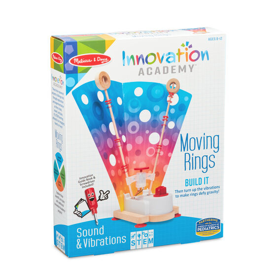
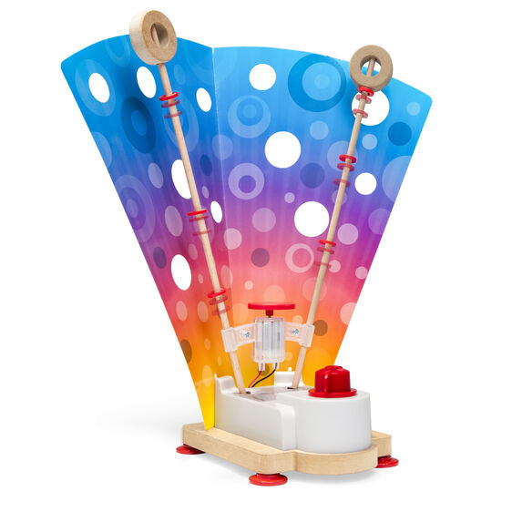
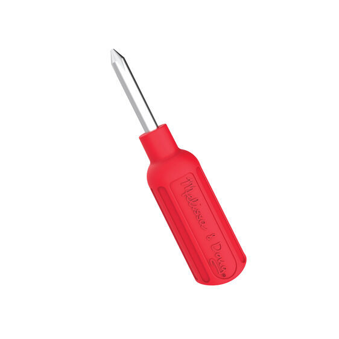

Innovation Academy - Moving Rings
Books
R460Engineer a working machine with vibrating motor that sends rings moving up and down two poles, while exploring the principles of sound and vibrations with the Melissa & Doug Innovation Academy Moving Rings Includes all materials and hardware to build, screwdriver, instruction/innovation booklet, collectible Innovation Academy seal, 8 plastic rings, backer card; 2 AA batteries required, not included Learn about energy and vibration while building the moving rings machine and activating the motor Innovation Academy kid-powered projects encourage open-ended hands-on exploration and experimentation - - STEM learning made fun A portion of sales of all Innovation Academy products supports The Whitney Workshop in Hamden, Conn., which designs and teaches projects for kids and adults that blend art, science, and invention Makes a great gift for preteens, ages 8 to 12, for hands-on, screen-free fun Ages 8+ Product:
Enquire about this product

Innovation Academy - Moving Rings at Kids Corner KZN
Innovation Academy - Moving Rings is part of our Books collection. Kids Corner KZN stocks toys for learning, pretend play, creative play, gifting and everyday childhood discovery in South Africa.
Browse more Books toys